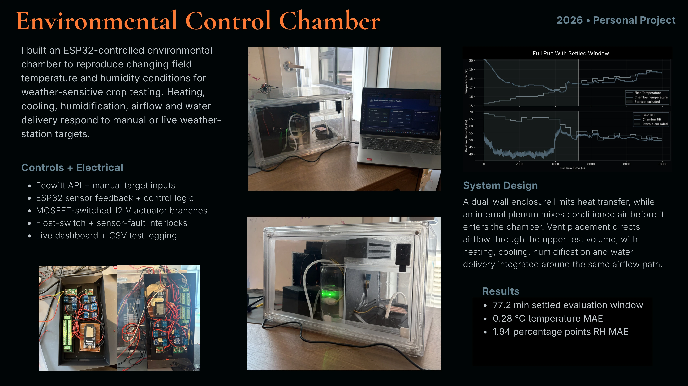

2026 • Personal Project
I built an ESP32-controlled environmental chamber to reproduce changing field temperature and humidity conditions for weather-sensitive crop testing. Heating, cooling, humidification, airflow and water delivery respond to manual or live weather-station targets.
A dual-wall enclosure limits heat transfer, while an internal plenum mixes conditioned air before it enters the chamber. Vent placement directs airflow through the upper test volume, with heating, cooling, humidification and water delivery integrated around the same airflow path.
Continue scrolling for technical detail